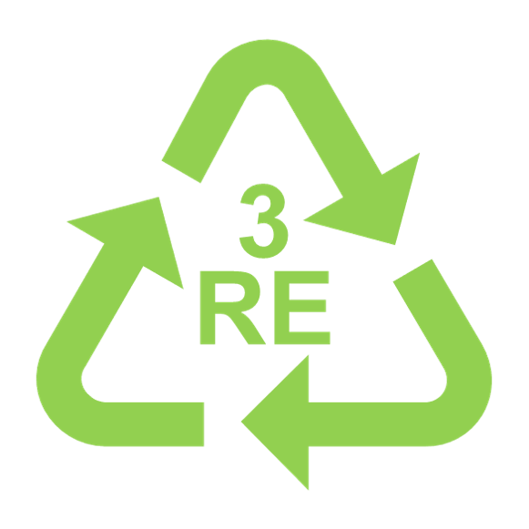

KISTI 2020 상반기 프로젝트
분리수거좀하시조 입니다.

- 프로젝트명: 3RE: reduce, reuse, recycle
- 프로젝트 주제: 이미지 분석을 통한 분리수거 시스템.
1) 쓰레기를 이미지로 분석하여 올바른 쓰레기 배출 방법을 알려준다.
2) 쓰레기 배출을 줄일 수 있는 환경 보호 방법을 제안한다.
- 주제선정이유
최근, 코로나바이러스감염증-19로 온라인 쇼핑과 음식 배달 등 비대면 소비가 늘면서 재활용 쓰레기가 급증하고 있습니다. 쓰레기를 재활용하기 위해서는 선별과정이 필수 입니다. 하지만 정해진 분리수거 기준에 미치지 못하고 혼합된 쓰레기들을 선별하는 데에는 많은 설비와 인력이 필요합니다. 그렇기 때문에 처음부터 ‘올바른 쓰레기 분리배출’ 방법을 제대로 알고 실천하는 것이 중요합니다. 분리수거좀하시조는 쓰레기 사진을 찍는 것만으로 올바른 분리수거 배출 방법을 알 수 있는 분리수거 시스템 어플리케이션을 만들고, 환경을 보호하기 위한 다양한 방법을 제안하고자 합니다.
- 프로젝트 기간: 2020.08.17 - 2020.09.24
- 참여한 사람: 구다혜, 최은희, 한태웅, 이보라